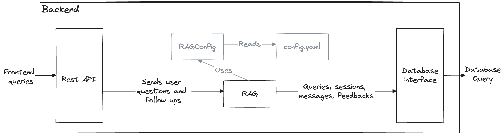

skaff-rag-accelerator
This is a starter kit to deploy a modularizable RAG locally or on the cloud (or across multiple clouds)
Features
- A configurable RAG setup based around Langchain (Check out the configuration cookbook here)
RAGandRagConfigpython classes that manage components (vector store, llm, retreiver, ...)- A REST API based on Langserve + FastAPI to provide easy access to the RAG as a web backend
- Optional API plugins for secure user authentication, session management, ...
Chain linksprimitive that facilitates chain building and allows documentation generation- A demo Streamlit to serve as a basic working frontend
Dockerfilesanddocker-composeto make deployments easier and more flexible- A document loader for the RAG
Quickstart
This quickstart will guide you through the steps to serve the RAG and load a few documents.
You will run both the back and front on your machine.
For this exemple, we will be using GPT4, the BAAI/bge-base-en-v1.5 embedding model, and Chroma for the vector store.
Duration: ~15 minutes.
Pre-requisites
- An
OPENAI_API_KEYfor the Artefact GPT-4 deployment on Azure. Contact alexis.vialaret@artefact.com if you do not have one. - A few GB of disk space
- Tested with python 3.11 (may work with other versions)
Run using docker compose
If you have docker installed and running you can run the whole RAG app using it. Otherwise, skip to the "Run directly" section
Start the service:
docker compose up -d
Make sure both the front and back are alive:
docker ps
Up X minutes.
Go to http://localhost:9000/ to query your RAG.
Run directly
In a fresh env:
pip install -r requirements-dev.txt
You will need to set some env vars, either in a .env file at the project root, or just by exporting them like so:
export PYTHONPATH=.
export ADMIN_MODE=1
Start the backend server locally:
python -m uvicorn backend.main:app
Start the frontend demo
python -m streamlit run frontend/front.py
Loading documents in the RAG
Right now the RAG does not have any documents loaded, you can use the notebook in the examples folder to transform a file into documents and load them in the vector store.
Documentation
To deep dive into under the hood, take a look at the documentation
Or serve them locally:
mkdocs serve
Architecture
The whole goal of this repo is to decouple the "computing and LLM querying" part from the "rendering a user interface" part. We do this with a typical 3-tier architecture.

- The frontend is the end user facing part. It reches out to the backend ONLY through the REST API. We provide a frontend demo here for convenience, but ultimately it could live in a completely different repo, and be written in a completely different language.
- The backend provides a REST API to abstract RAG functionalities. It handles calls to LLMs, tracks conversations and users, handles the state management using a db, and much more. To get the gist of the backend, look at the of the API: http://0.0.0.0:8000/docs. It can be extended by plugins.
- The database is only accessed by the backend and persists the state of the RAG application. The same plugins that extend the functionalities of the backed, can extend the data model of the DB.
The structure of the repo mirrors this architecture.

The RAG itself does the following: